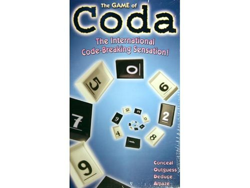

CSC207 - Project 3 -
Coda
Assigned Nov 28th 12 p.m.
Part 1 Due Dec 2th 4 p.m.
Part 2 Due Dec 16th 3 p.m.
Overview
For this project, we will explore more object-oriented programming in the context of a tile game. We will create a program for multiple players to play the game
Coda.
In particular, this project will cover the following concepts we have discussed in class:
- Lists
- Dictionaries
- Control Statements
- Sentinel Loops
- Definite Loops
- Objects and Classes
You may work with one partner on this project. When you turn in Part 1, you must make clear who you are working with if anyone, and you cannot change partners for Part 2.
Description

Coda is a tile game based involving luck and logic.
In this game, players attempt to deduce the tiles in other player's secret code.
You can find the rules here. We will stick to the basic rules.
Part 1: Design - 3%
For part 1 of the assignment, create a design document detailing all the objects you will need to represent the display and interactions necessary to carry out the game. Be as detailed as possible, discussing the components and functionality needed for each
part of the game.
Part 2: Implementation - 16%
I will release my design document on Friday December 2nd, when Part 1 is due. It will have a sample implementation scheme to help you complete the project.
Extensions
As an extension for extra credit, you can implement the "dash" optional rules. Also, you can implement the tournament rules to calculate a final score for each player.
What to Hand In
Log in to cs.centenary.edu through either Secure FTP or WinSCP using your cs login and password. Create a subdirectory from
csc207 called project3. Copy your coda.py and
parts.py project into this directory, along with any other files you need to run your code. Make sure you have followed the
Python Style Guide, and have run your project through the Automated Style Checker.
You must hand in:
and any other files necessary to run your code.
© Mark Goadrich 2011, Centenary College of Louisiana